Phonons¶
Building the Phonons class object is the intermediate step between finishing your ForceConstants object, and initializing the Conductivity object. The keyword arguments given to this class help kALDo make the correct approximations regarding the periodicity of your system and the conditions of your material when calculating the thermal conductivity (e.g. temperature of the material).
Periodicity and k-points¶
The primary way that kALDo handles low-symmetry systems is through the grid of points to sample in reciprocal space, adjusted through the 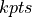 argument. The argument here should be an array or list of three natural numbers, such as (2, 2, 2). You will need to converge the final thermal conductivity of the material against increasingly dense k-grids to ensure the reliability of your calculation. Increasing the number of along a lattice vector is the equivalent to increasing the wavelength of a vibrational normal mode along that axis. See our ref: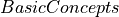 section for more details.
Your choice of should strive to sample each direction in reciprocal space equally by scaling the number of points in that direction according to the magnitude of the reciprocal lattice vector. A quick way to do this is by taking the inverse of the magnitude of the real space lattice vector. For a concrete example, imagine a cubic lattice with lengths . We know our should roughly follow 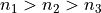. More specifically, we want to minimize the differences of the following terms:
- ..math::
frac{n_{1}}{a_{1}} approx frac{n_{2}}{a_{2}} approx frac{n_{1}}{a_{1}}
Which leads to us solving a series of inequalities. We will demonstrate the idea here by solving for the bounds on 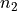, and then using the known relationship between the magnitudes of the lattice vectors to setup an inequality. The result yields:
- ..math::
frac{n_{3} cdot a_{2}}{a_{3}} leq n_{2} leq frac{n_{1} cdot a_{2}}{a_{1}}
The example was given for a sample that’s periodic in each direction, however it will be true for less symmetric samples as well with the modification that you can ignore any direction lacking symmetry. The non-periodic direction should be set to 1, so for amorphous samples the argument should be (1,1,1). For 2D materials, set the out-of-plane direction to 1, and for nanowires use a value greater than 1 for direction along the wire.
Classical Limit¶
Probably the second most important setting is the 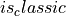 argument. By defaut, kALDo uses the Bose-Einstein distribution to describe the phonon population at a given temperature which assumes quantized energy. The Basic Concepts section will provide more details, however because of this population choice the heat capacity also becomes affected. Close to, or above the Debye Temperature you should switch the Boolean to True which changes the calculation of mode population to the classical limit as described in the theory section. In general, the heat capacities and scattering will both increase, shortening the lifetimes and increasing the energy per mode
General vs. Case-Specific Arguments¶
This section is intended to clarify which arguments need to be set for all users, and which should be used in more specific situations. If you are a beginner to intermediate user, avoid the case-specific arguemnts. Advanced users can read more on the details of each case-specific argument in the phonons api section, and in some cases the Basic Concepts section.
API Reference¶
Methods
Calculate the atom projected phonon density of states. |
Attributes
Calculate physical modes. |
|
Calculates the participation ratio of each normal mode. |
|
Calculate the phonons bandwidth, the inverse of the lifetime, for each k point in k_points and each mode. |
|
Calculate the isotopic bandwidth with Tamura perturbative formula. |
|
Calculate the phonons bandwidth, the inverse of the lifetime, for each k point in k_points and each mode. |
|
Calculate phonons frequency |
|
Calculates the angular frequencies from the diagonalized dynamical matrix. |
|
Calculates the velocity using Hellmann-Feynman theorem. |
|
Calculate the heat capacity for each k point in k_points and each mode. If classical, it returns the Boltzmann constant in J/K. If quantum it returns the derivative of the Bose-Einstein weighted by each phonons energy. .. math::. |
|
Calculate the generalized 2d heat capacity for each k point in k_points and each mode. |
|
Calculate the phonons population for each k point in k_points and each mode. |
|
Calculate the 3-phonons-processes phase_space, for each k point in k_points and each mode. |
|
Calculates the eigenvalues of the dynamical matrix in Thz^2. |
|
Calculates the eigenvectors of the dynamical matrix. |
- class kaldo.phonons.Phonons(**kwargs)[source]¶
The Phonons object exposes all the phononic properties of a system by manipulation of the quantities passed into the ForceConstant object. The arguments passed in here reflect assumptions to be made about the macroscopic system e.g. the temperature, or whether the system is amorphous or a nanowire. The ForceConstants, and temperature are the only two required parameters, though we highly recommend the switch controlling whether to use quantum/classical statistics () and the number of k-points to consider (). For most users, you will not need to access any Phonon object functions directly , but only reference an attribute (e.g. Phonons.frequency). Please check out the examples for details on our recommendations for retrieving, and plotting data.
- Parameters:
forceconstants (ForceConstants) – Contains all the information about the system and the derivatives of the potential energy.
temperature (float) – Defines the temperature of the simulation Units: K
is_classic (bool) – Specifies if the system is treated with classical or quantum statistics. Default: 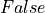
kpts ((int, int, int)) – Defines the number of k points to use to create the k mesh Default: (1, 1, 1)
min_frequency (float) – Ignores all phonons with frequency below 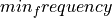 Units: Thz Default:

max_frequency (float) – Ignores all phonons with frequency above 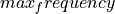 Units: THz Default:
third_bandwidth (float) – Defines the width of the energy conservation smearing in the phonons scattering calculation. If
the width is calculated
dynamically. Otherwise the input value corresponds to the width.
Units: THz
Default: broadening_shape (string) – Defines the algorithm to use for line-broadening when enforcing energy conservation rules for three-phonon scattering. Options: 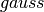, 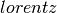 and 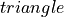. Default:
folder (string) – Specifies where to store the data files. Default: 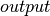.
storage (string) – Defines the strategy used to store observables. The
 strategy
stores formatted text files for most harmonic properties but relies on
numpy arrays for large arrays like the gamma tensor. The
strategy
stores formatted text files for most harmonic properties but relies on
numpy arrays for large arrays like the gamma tensor. The  option
doesn’t generate any output except what is printed in your script.
Options: , 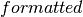, 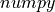, , 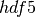
Default: ‘formatted’
option
doesn’t generate any output except what is printed in your script.
Options: , 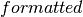, 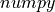, , 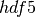
Default: ‘formatted’grid_type (string) – Specifies whether the atoms in the replicated system were repeated using a C-like index ordering which changes the last axis the fastest or FORTRAN-like index ordering which changes the first index fastest. Options: ‘C’, ‘F’ Default: ‘C’
is_balanced (bool) – Enforce detailed balance when calculating anharmonic properties. Useful for simulations where it may be difficult to get a sufficiently dense k-point grid. Default: False
is_unfolding (bool) – If the second order force constants need to be unfolded like in P. B. Allen et al., Phys. Rev. B 87, 085322 (2013) set this to True. Default: False
g_factor ((n_atoms) array , optional) – It contains the isotopic g factor for each atom of the unit cell Default: None
include_isotopes (bool, optional.) – Defines if you want to include isotopic scattering bandwidths. Default is False.
iso_speed_up (bool, optional.) – Defines if you want to truncate the energy-conservation delta in the isotopic scattering computation. Default is True.
is_nw (bool, optional) – Defines if you would like to assume the system is a nanowire. Default is False
- Return type:
Phonons Object
- Attributes:
anharmonic_bandwidthCalculate the phonons bandwidth, the inverse of the lifetime, for each k point in k_points and each mode.
bandwidthCalculate the phonons bandwidth, the inverse of the lifetime, for each k point in k_points and each mode.
eigenvaluesCalculates the eigenvalues of the dynamical matrix in Thz^2.
eigenvectorsCalculates the eigenvectors of the dynamical matrix.
frequencyCalculate phonons frequency
heat_capacityCalculate the heat capacity for each k point in k_points and each mode.
heat_capacity_2dCalculate the generalized 2d heat capacity for each k point in k_points and each mode.
isotopic_bandwidthCalculate the isotopic bandwidth with Tamura perturbative formula.
omegaCalculates the angular frequencies from the diagonalized dynamical matrix.
participation_ratioCalculates the participation ratio of each normal mode.
phase_spaceCalculate the 3-phonons-processes phase_space, for each k point in k_points and each mode.
physical_modeCalculate physical modes.
populationCalculate the phonons population for each k point in k_points and each mode.
velocityCalculates the velocity using Hellmann-Feynman theorem.
Methods
pdos([p_atoms, direction, bandwidth, n_points])Calculate the atom projected phonon density of states.
- property physical_mode¶
Calculate physical modes. Non physical modes are the first 3 modes of q=(0, 0, 0) and, if defined, all the modes outside the frequency range min_frequency and max_frequency.
- Returns:
physical_mode – bool
- Return type:
np array(n_k_points, n_modes)
- property frequency¶
Calculate phonons frequency
- Returns:
frequency – frequency in THz
- Return type:
np array(n_k_points, n_modes)
- property participation_ratio¶
Calculates the participation ratio of each normal mode. Participation ratio’s represent the fraction of atoms that are displaced meaning a value of 1 corresponds to translation. Defined by equations in DOI: 10.1103/PhysRevB.53.11469
- Returns:
participation_ratio – atomic participation
- Return type:
np array(n_k_points, n_modes)
- property velocity¶
Calculates the velocity using Hellmann-Feynman theorem.
- Returns:
velocity – velocity in 100m/s or A/ps
- Return type:
np array(n_k_points, n_unit_cell * 3, 3)
- property heat_capacity¶
Calculate the heat capacity for each k point in k_points and each mode. If classical, it returns the Boltzmann constant in J/K. If quantum it returns the derivative of the Bose-Einstein weighted by each phonons energy. .. math:
c_\mu = k_B \frac{\nu_\mu^2}{ \tilde T^2} n_\mu (n_\mu + 1)
where the frequency and the temperature 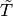 are in THz.
- Returns:
c_v – heat capacity in J/K for each k point and each mode
- Return type:
np.array(n_k_points, n_modes)
- property heat_capacity_2d¶
Calculate the generalized 2d heat capacity for each k point in k_points and each mode. If classical, it returns the Boltzmann constant in W/m/K.
- Returns:
heat_capacity_2d – heat capacity in W/m/K for each k point and each modes couple.
- Return type:
np.array(n_k_points, n_modes, n_modes)
- property population¶
Calculate the phonons population for each k point in k_points and each mode. If classical, it returns the temperature divided by each frequency, using equipartition theorem. If quantum it returns the Bose-Einstein distribution
- Returns:
population – population for each k point and each mode
- Return type:
np.array(n_k_points, n_modes)
- property bandwidth¶
Calculate the phonons bandwidth, the inverse of the lifetime, for each k point in k_points and each mode.
- Returns:
bandwidth – bandwidth for each k point and each mode
- Return type:
np.array(n_k_points, n_modes)
- property isotopic_bandwidth¶
Calculate the isotopic bandwidth with Tamura perturbative formula. Defined by equations in DOI:https://doi.org/10.1103/PhysRevB.27.858
- Returns:
isotopic_bw – atomic participation
- Return type:
np array(n_k_points, n_modes)
- property anharmonic_bandwidth¶
Calculate the phonons bandwidth, the inverse of the lifetime, for each k point in k_points and each mode.
- Returns:
bandwidth – bandwidth for each k point and each mode
- Return type:
np.array(n_k_points, n_modes)
- property phase_space¶
Calculate the 3-phonons-processes phase_space, for each k point in k_points and each mode.
- Returns:
phase_space – phase_space for each k point and each mode
- Return type:
np.array(n_k_points, n_modes)
- property eigenvalues¶
Calculates the eigenvalues of the dynamical matrix in Thz^2.
- Returns:
eigenvalues – Eigenvalues of the dynamical matrix
- Return type:
np array(n_phonons)
- property eigenvectors¶
Calculates the eigenvectors of the dynamical matrix.
- Returns:
eigenvectors – Eigenvectors of the dynamical matrix
- Return type:
np array(n_phonons, n_phonons)
- property omega¶
Calculates the angular frequencies from the diagonalized dynamical matrix.
- Returns:
frequency – frequency in rad
- Return type:
np.array(n_k_points, n_modes)
- pdos(p_atoms=None, direction=None, bandwidth=0.05, n_points=200)[source]¶
Calculate the atom projected phonon density of states. Total density of states can be computed by specifying all atom indices in p_atoms. p_atoms input format is flexible: - Providing a list of atom indices will return the single pdos summed over those atoms - Providing a list of lists of atom indices will return one pdos for each set of indices
- Returns:
frequency (np array(n_points)) – Frequencies
pdos (np.array(n_projections, n_points)) – pdos for each set of projected atoms and directions